This vignette summarizes the workflow implemented by the refactor_nhdplus() function to normalize flowline length in the NHDPlus network by splitting long flow lines and collapsing short flowlines. The code developed for this is parameterizable and this vignette is presented with target lengths of 2km for long flowlines splits and 0.5km for minimum flowlines length. While this workflow can be run on the entire network, for this example, we will use the sample network subset included in the nhdplusTools package.
The first section describes the network as it exists without modification. Following that, each processing step is illustrated and final results are summarized.
Prior to summarizing the network, some NHDPlus conditioning can be performed. The following function removes coastal and non-dendritic flowlines. It can also remove networks with an outlet drainage area under a threshold or a longest path length under a threshold, but those inputs are set to 0 such that all networks are included here. Note that this is especially important when running the whole country – little change is applied to network subsets that follow the network upstream with tributaries.
nhdplus_flines <- nhdplusTools::sample_flines
min_network_size <- 0
min_path_length <- 0
flines <- prepare_nhdplus(st_set_geometry(nhdplus_flines, NULL),
min_network_size,
min_path_length)
#> Warning in prepare_nhdplus(st_set_geometry(nhdplus_flines, NULL), min_network_size, : Removed 10 flowlines that don't apply.
#> Includes: Coastlines, non-dendritic paths,
#> and networks with drainage area less than 0 sqkmThe following histograms and plots show characteristics of the NHDPlusV2 network flowline lengths. 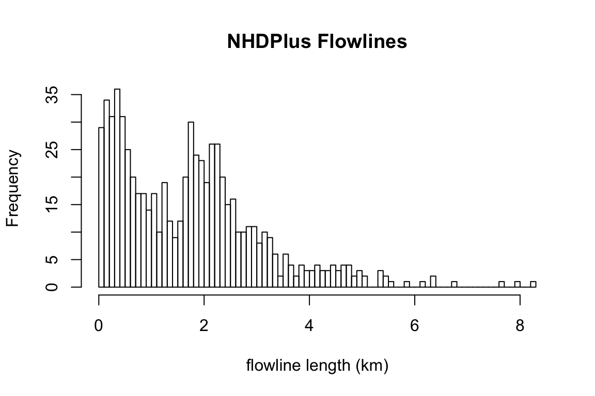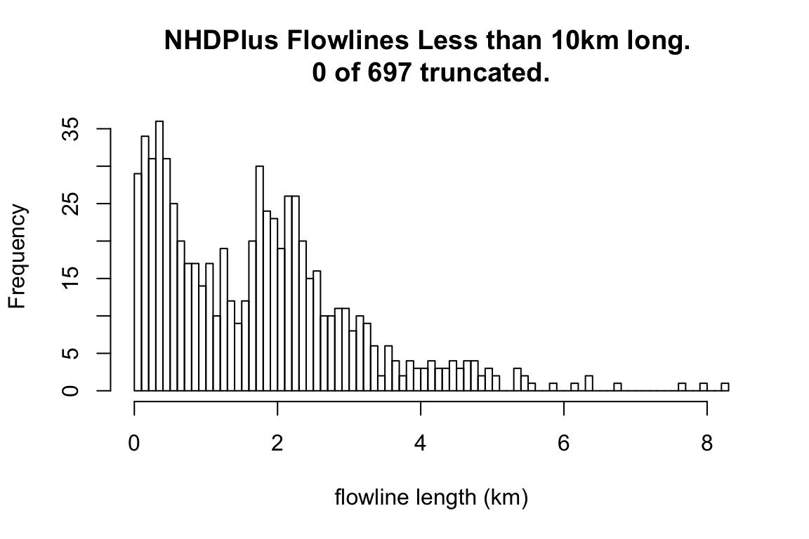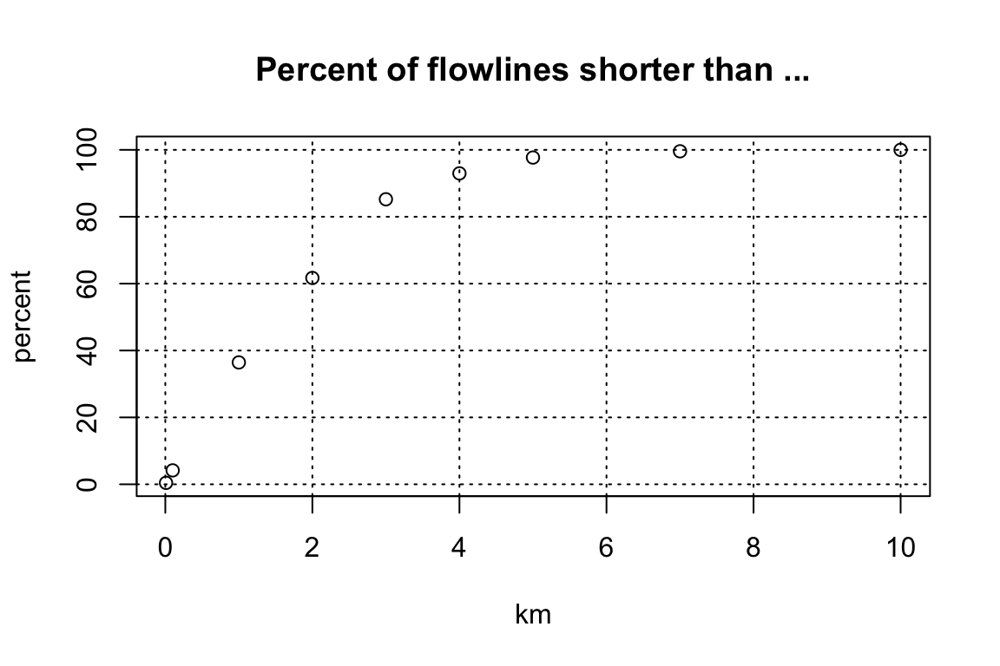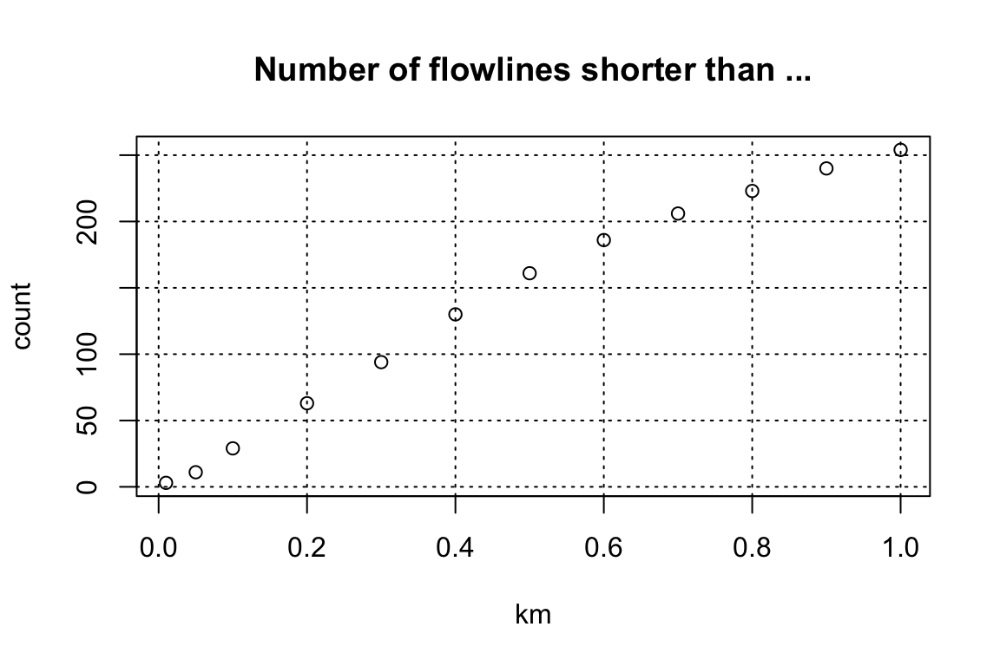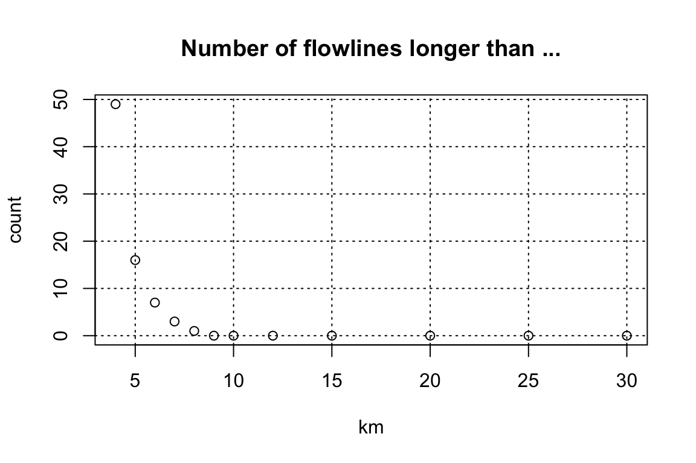
The complete refactor workflow has been packaged into a single function that can be called as shown below. For the purposes of demonstration this function is not used and individual package functions called by it are shown.
## Not Run ##
refactor_nhdplus(nhdplus_flines = nhdplus_flines,
split_flines_meters = 2000,
split_flines_cores = 3,
collapse_flines_meters = 500,
collapse_flines_main_meters = 500,
out_collapsed = "nhdplus_collapsed.gpkg",
out_reconciled = "nhdplus_reconciled.gpkg",
three_pass = TRUE)The inputs to this are:
The split_flowlines feature requires flowlines with geometry but for performance reasons, the prep_nhdplus function works with attributes only. The code below, joins the geometry back, coerces it to the required geometry type, and projects it to a projection suited to distance measurement at the contental scale of NHDPlus. It then executes the split_flowlines function.
flines <- inner_join(flines, select(nhdplus_flines, COMID), by = "COMID") %>%
st_as_sf() %>%
st_cast("LINESTRING") %>%
st_transform(5070)
#> Warning in st_cast.sf(., "LINESTRING"): repeating attributes for all sub-
#> geometries for which they may not be constant
flines <- split_flowlines(flines,
max_length = 2000,
para = 3)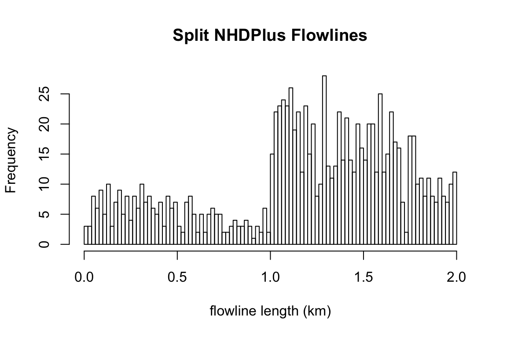
As can be seen here, split_flowlines breaks long flowlines into equal length pieces, which results in the new distribution of flowline lengths shown.
Now we can collapse very short flowlines.
collapse_flines_meters <- 500
collapse_flines_main_meters <- 500
collapsed_flines <- collapse_flowlines(st_set_geometry(flines, NULL),
(0.25*collapse_flines_meters/1000),
TRUE,
(0.25*collapse_flines_main_meters/1000))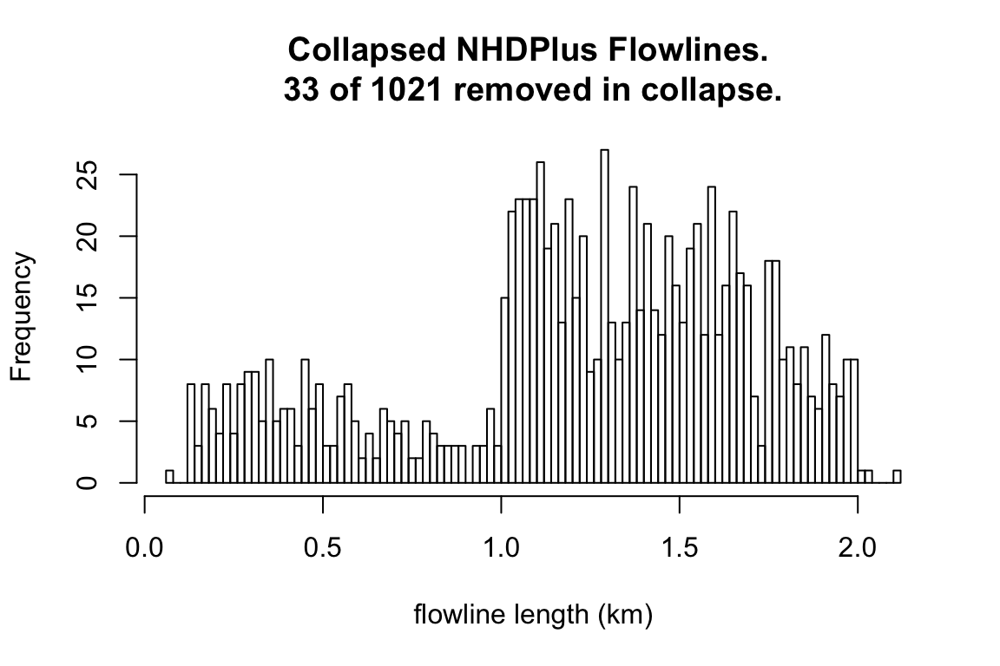 As can be seen here, some collapsed flowlines extend the split flowlines. This is a result of chains of very short flowlines being combined together. This problem is more or less unavoidable but is improved by running the collapse step a few times with small to large input thresholds as is done next.
Now we can collapse twice more
collapsed_flines <- collapse_flowlines(collapsed_flines,
(0.5*collapse_flines_meters/1000),
TRUE,
(0.5*collapse_flines_main_meters/1000),
warn = FALSE)
collapsed_flines <- collapse_flowlines(collapsed_flines,
(collapse_flines_meters/1000),
TRUE,
(collapse_flines_main_meters/1000),
warn = FALSE)
# Now we can save the output
collapsed_flines %>%
inner_join(select(flines, COMID), by = "COMID") %>%
st_as_sf() %>%
st_transform(4326) %>%
st_write("nhdplus_collapsed.gpkg", layer_options = "OVERWRITE=YES", quiet = TRUE)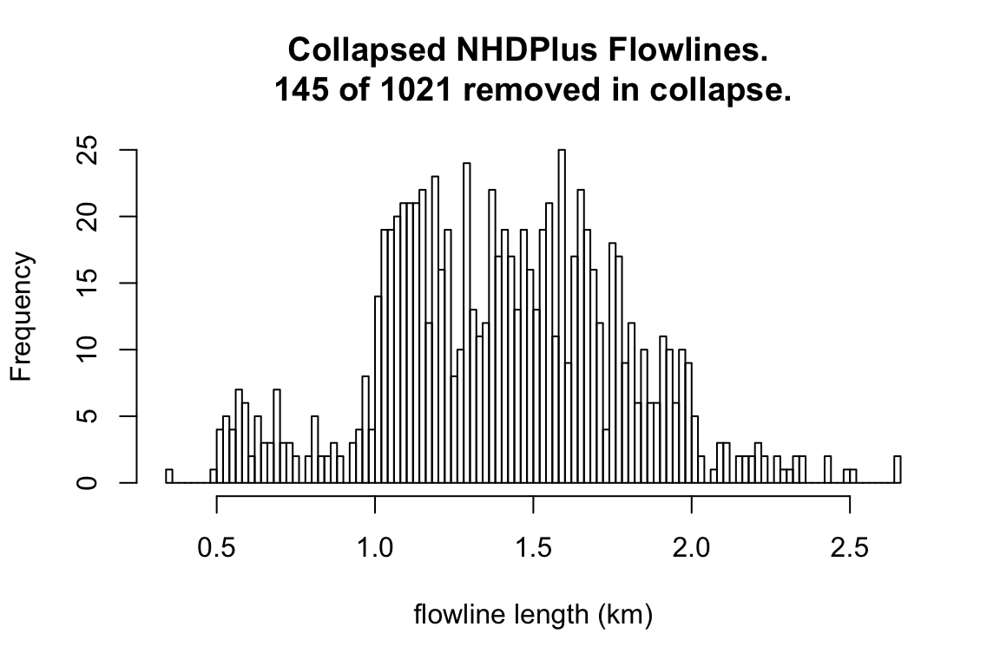 As shown here, the distribution of flowline lengths is much tighter now but very small headwaters and long chains of collapsed flowlines remain out of the desired range. For the sake of completness,
collapsed_flines_one_pass <- collapse_flowlines(st_set_geometry(flines, NULL),
(collapse_flines_meters/1000),
TRUE,
(collapse_flines_main_meters/1000))As shown in this historigram, the problem of long chains of collapsed flowlines is much worse when the collapse is run only once.
Now that we have our flowlines collapsed, we need to reconcile the results into merged geometries with updated ids. The reconcile_collapsed_flowlines function does this including a column that contains a comma seperated list of catchment ids that were merged together to form each new flowline.
collapsed <- reconcile_collapsed_flowlines(collapsed_flines,
geom = select(flines, COMID),
id = "COMID")
collapsed$member_COMID <- unlist(lapply(collapsed$member_COMID,
function(x) paste(x, collapse = ",")))
st_write(st_transform(collapsed, 4326), "nhdplus_reconciled.gpkg", layer_options = "OVERWRITE=YES")
#> Writing layer `nhdplus_reconciled' to data source `nhdplus_reconciled.gpkg' using driver `GPKG'
#> options: OVERWRITE=YES
#> features: 877
#> fields: 5
#> geometry type: Unknown (any)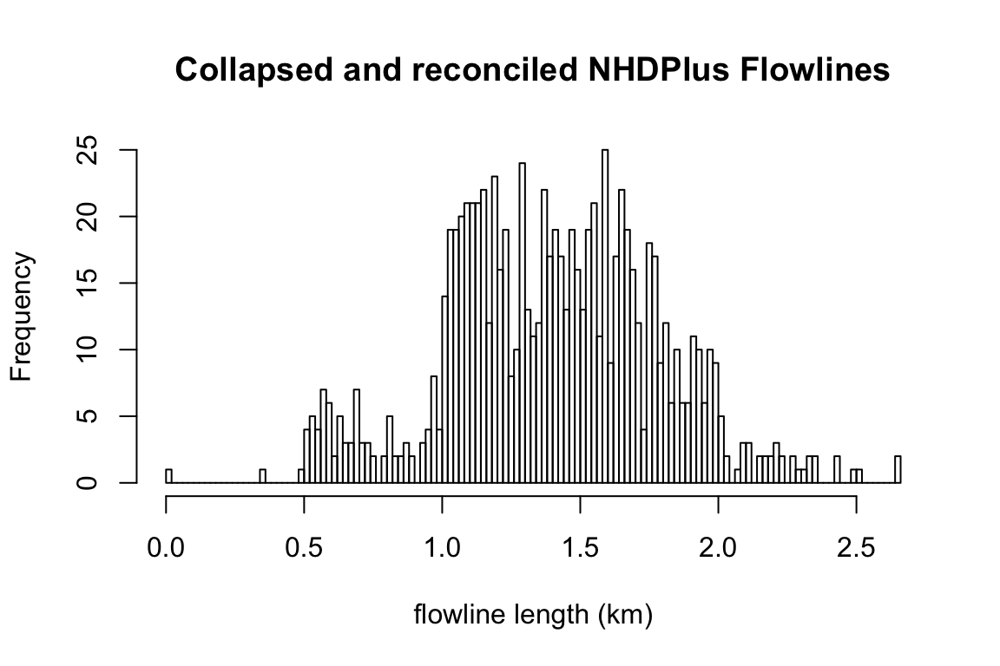
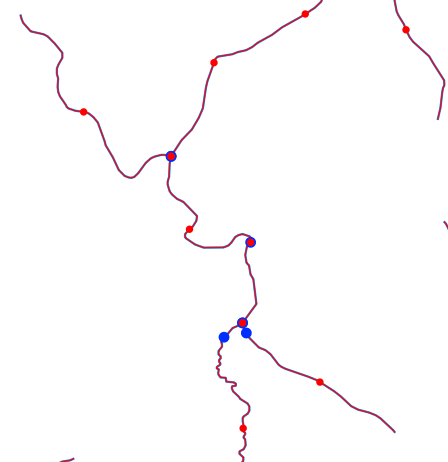
This image (and those below) show the original NHDPlus network in blue with streams greater than first order rendered with a thick blue line. Blue dots are where the original NHDPlus flowline breaks were and red dots are where the new refactored flowline breaks are. Notice that lone red dots are the result of splitting flowlines and lone blue dots are the result of collapsing them.
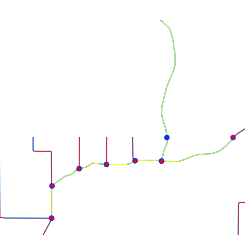
This image shows an example of a chain combination. All the small tributaries that intersect the highlighted mainstem are routed to the outlet of the mainstem flowline and have a length attribute that is the distance to that outlet. This problem is especially common where there is a high density of small tributaries meeting a mainstem like in the case shown here. The longest tributary here routed to the oulet of the mainstem is the longest single flowline in the result set (5.5km) shown in the histogram above.
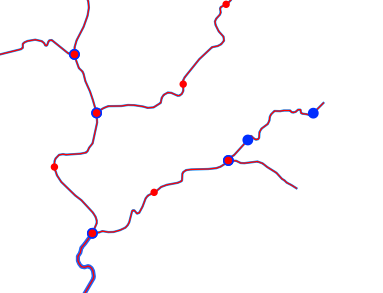
This image shows how short headwater flowlines can be combined downstream. The two open blue dots are where three short flowlines were collapsed into one 2km long flowline.
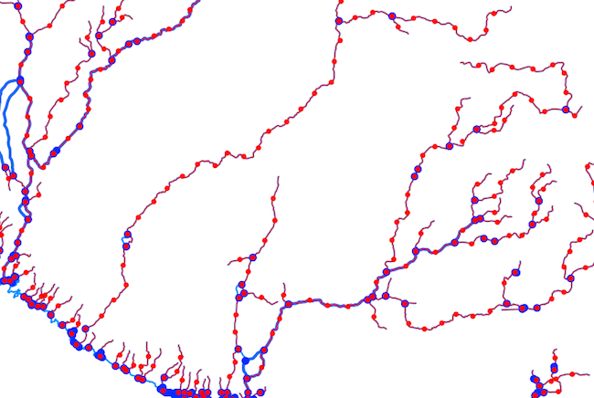
This image shows a coastal system with very long flowlines that have largely been split into many pieces.
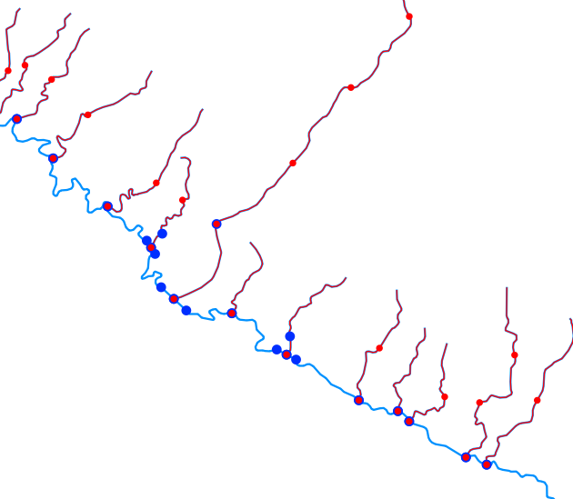
This image is a zoomed in view of the outlet and coastal drainages of the system in the image above. Not that there are numerous single-flowling coastal systems in the NHDPlus.